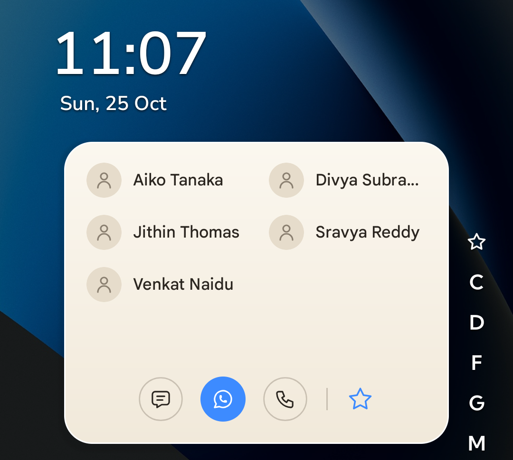
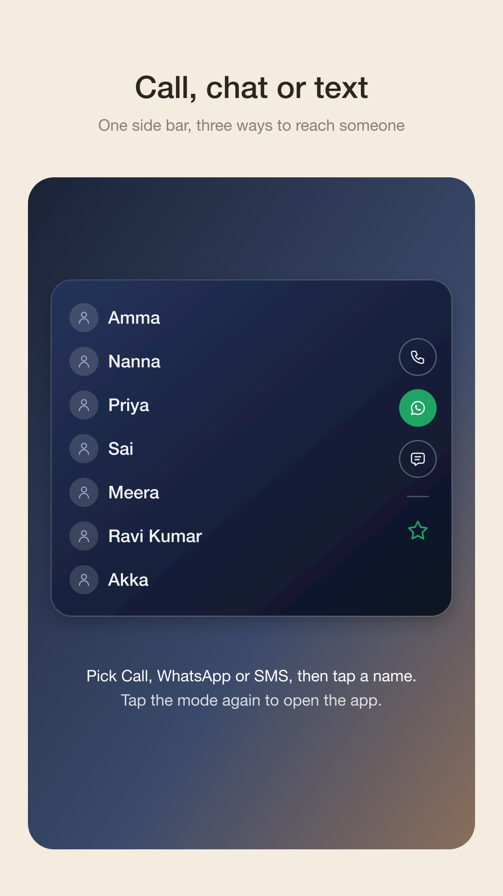
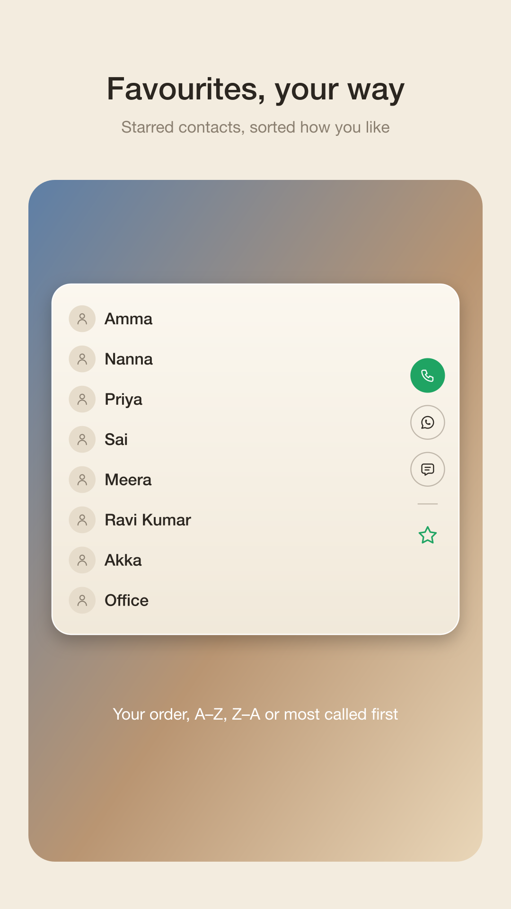
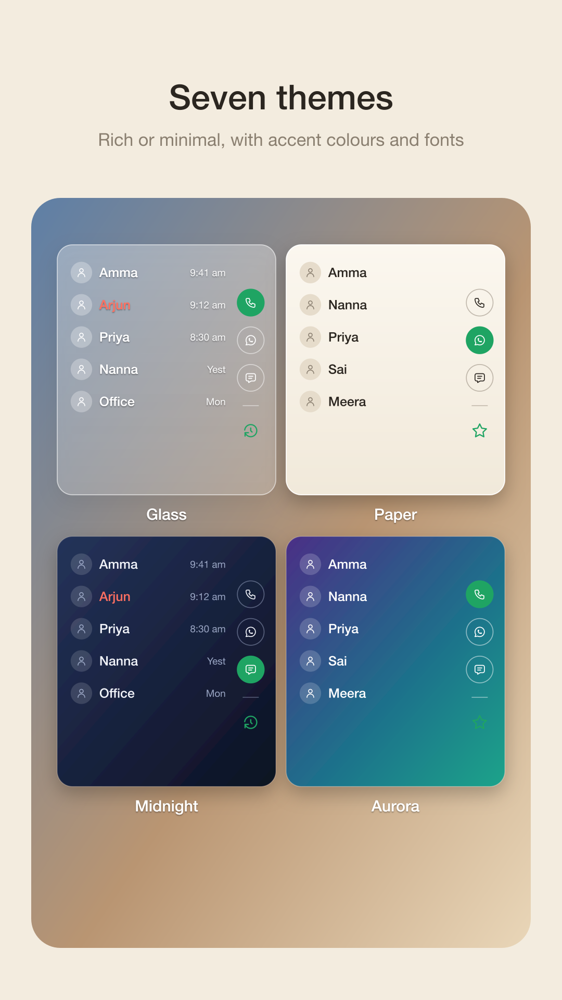

Your people, one tap away
A speed dial widget for your Android home screen. Call, WhatsApp or text the people you talk to most, without opening a single app.
Join the betaFree · No ads · Android 12 and newer

Join the beta
Join the testing group
Google Play only lets members of this group install the beta. Joining is one tap.
Open the groupInstall from Google Play
Use the same Google account. Tap "Become a tester", then download Dial Deck.
Get Dial DeckThen long-press your home screen, tap Widgets and add Dial Deck. Or tap "Add to home screen" in the app.
What it does
Call, chat or text in one tap
Pick Call, WhatsApp or SMS in the widget's side bar, then tap any name. Tap the mode again to open that app.
Recents and favourites
Your latest calls, missed ones in red, and your starred contacts, in your order or most called first.
Looks the way you like
Seven themes, accent colours, your phone's own font or three others, one or two columns, photos or clean icons.
Always up to date
Recents refresh seconds after a call ends, and new names show up on their own. Uses almost no battery.
A closer look



Private by design
Nothing leaves your phoneDial Deck has no internet access at all. No accounts, no ads, no tracking. Your calls and contacts are only used to draw the widget.
Questions
Why does it ask for call log and contacts?
To show your recent calls and starred contacts in the widget, with their names and photos. Everything is read on your phone and never sent anywhere; the app can't even connect to the internet.
Is it really free?
Yes. No ads, no in-app purchases, no subscription.
Which phones does it work on?
Android 12 or newer, with any launcher that supports widgets: Pixel, Samsung, OnePlus, Vivo, Xiaomi, Niagara and more.
Why do I need to join a group first?
Dial Deck is in a closed beta on Google Play. Google only shows beta apps to people in the testers' group, so step 1 unlocks step 2.
How do I send feedback?
Open Dial Deck and tap "Send feedback" at the bottom of the main screen. It opens your email app with the details filled in.